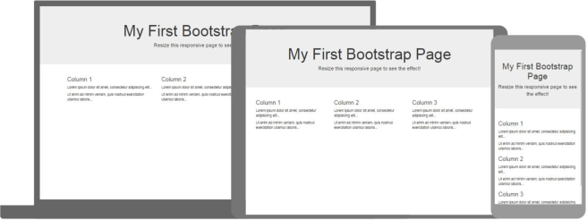
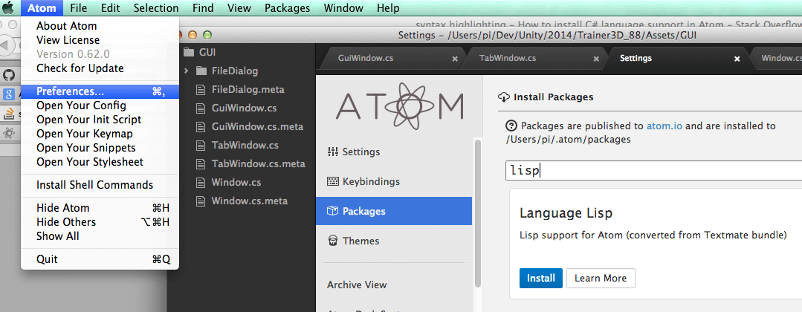
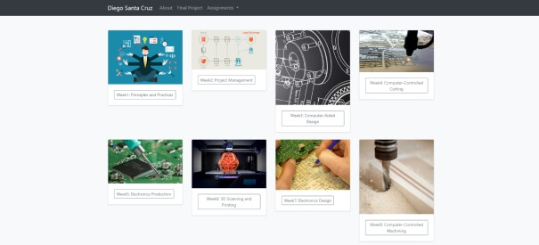
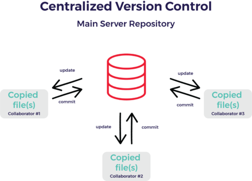
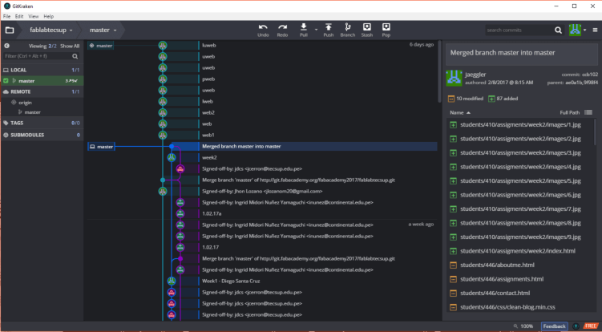
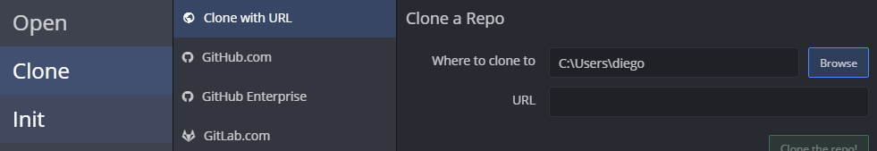
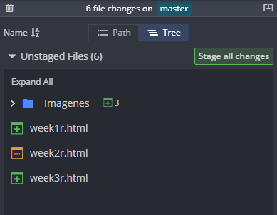

Learning Bootstrap
For this assignment, I would be using Bootstrap to make my webpage. Bootstrap is an open source toolkit to website development. It works with HTML, CSS and JavaScritp to give the user prebuilt components to incluide in their websites. Using a youtube this youtube tutorial I manage to understand how to use and modify my website.

Editor Selection
I have some experience with coding, so checked a two text editors. TextWrangler was the first choice, which is installed in my Macbookpro. It's a very simple editor but enought for simple task. I tried for a while, but I wasn't getting confortable with it. That's when decided to look for something else. My search lead me to Atom editor. It is a simple but powerfull program with a very intuitive UI. In a couple of hours, I was working with no problems. I even installed a preview addon, that let me see my html display in real time. Very helpful.

Web design
Bootstrap website have a handful examples templates to start working with. I chose the "Album" template for my index page and modify it to create "assignment" and "about" pages. During the Academy I will be implementing extra things like a side navbar and side segment for declaring the objectives of each week. Here is my work: home page, one for my personal info and last the week assignments. All can be cheked within browser using CTRL+I command.

Git explanation

Basically, there is a repository where all data is storaged.To get to that storage, we need a "client" program to "push" info into. Each time it does, we need to summit a "commit" point out what changes have been added from previous version. That way, we can version-control our work.

I will be using Git Kraken as a client (https://www.gitkraken.com/), because is free for non commercial uses and allows me to have a graphic vision of the repo so far. First we need to clone the repo where we are to work. Each student gets a repo (link to ge from gitlab.fabclo9ud.org) from Academy staff. On GitKraken, the option for clonning is on File>Clone Repo. A direction on the user hard drive should be added and the URL from the each repo. After hitting "Clone repo!", the client shows the main screen.

On left we have repo control, on right commit control, on middle there is a graphic representation of each commint and details about it; and finally on top controls for push, pull and undoing actions. On the selected directory (on user hard drive), we need to copy all files we are to push. When all are copy, the programm will show there are "changes", if we want those changes to be carry to the "push" group, we "stage" all changes. Finally, commit them with a topic and hit "Stage files/changes to commit".

If done correctly, in the middle part of the screen the commit will display, but before we can see it online we need to push it to the repo. That is done with the PUSH button on top. Did correctly, the program will display the files are correctly storaged within the repo and in the local hard drive.